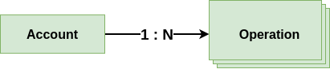
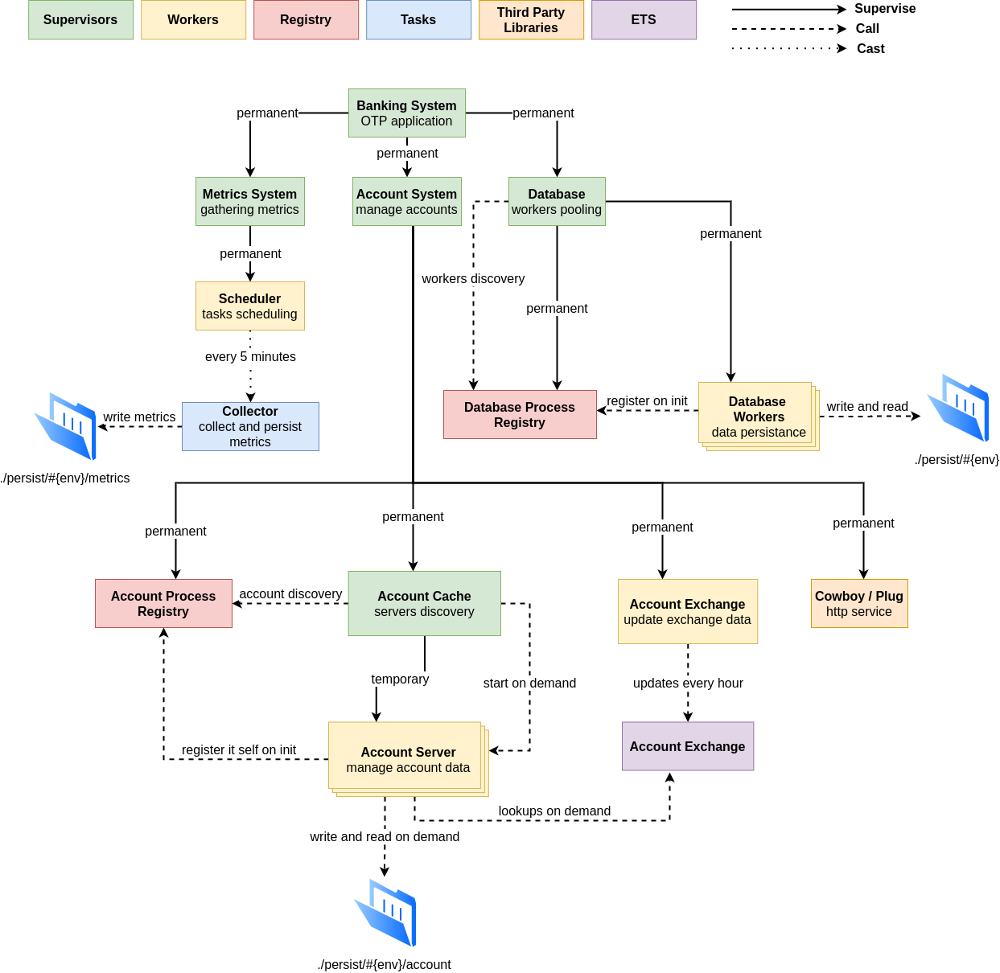
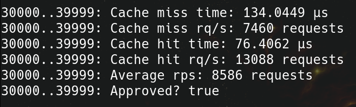

System Overview
The goal of the system is to be a prototype of how to build a complete banking account management system that allows users to keep track of operations that happen over their account's and make operations like transfers, deposits and refunds.
The system is made of 2 basic entities:
Account: The basic structure of the system, responsible for hold operations data, balances and the business rules to make everything work properleyAccount.Operation: Basic structure that holds data of an operation such as type, status and custom data like amount and currency, is responsible for the operation's creation rules

An account has N operations, each one of them has data that identifies what happened in that operation.
Running the system
Requirements: Elixir version >= 1.10
Steps:
1 - Clone the repository: https://github.com/oliveigah/banking_prototype
2 - On terminal, inside repository folder use the following commands: mix deps.get mix test iex -S mix 3 - You are good to go! :D
Interacting
You can interact with the system in 2 different ways.
The first one is directly via the interactive shell. To do this you can check out the documentarion over the modules section. There you will find a set of examples of how to interact with the system via interactive shell and manage accounts on it.
The main functions to start are Account.Cache.server_process/2 which will be used to get the pid of the server you will interact with, and all functions of the Account.Server which will be used to execute all the operations over the account!
The second way to interact with the system is by using HTTP requests, this is described on the HTTP page.
Account Features
- Accounts can hold balances on multiple currencies
- Exchange currencies based on the exchange rate
- Make operations over his own account:
- Deposit
- Withdraw
- Transfer to another account
- Card transaction
- Refunds
- Exchange two different currencies balances
- All these operations works with all currencies avaiable on the system, but the exchange has to happen before the operation it self, otherwise it will return "no {currency} funds"
- A "syntax sugar" that enable multiple transfer being done with a single request
- Allows users to give metadata information about the operations
- Filter operations over an account by occurrence date time and id
- Special limit that allow account balances go below 0 until a predefined threshold, this feature only works for account's default currency
System Design
The system has a very simple design that relies on key abstractions of the elixir language such as GenServer, Supervisor and Registry.
Some of the technical solutions are admittedly not optimal, but these non optimal parts are usually on side systems like the database and authentication and not part of the core implementation.
Below you can see a high level diagram that explain the system component's relations in a non rigorous manner:

Data Representation
The account data is composed by a simple struct as explained in Account module documentation.
@type t() :: %__MODULE__{
balances: map(),
limit: integer(),
operations: map(),
operations_auto_id: integer(),
default_currency: atom()
}All mapipulations over an account data structure, has to be done as a function call to a predifened function inside Account module. This rule helps to keep the business rules well defined inside a single module that can be read and verified easily, either by new programmers arriving at the project and business experts.
This rule enables business experts verify the correctness of the system easier and automated tests being done faster and with less dependencies, for instance look at the code below:
def withdraw(%Account{} = account, %{amount: amount, currency: currency} = data) do
case remove_balance(account, amount, currency) do
{:ok, new_account} ->
operation = Account.Operation.new(:withdraw, data)
{new_account, operation_data} = register_operation(new_account, operation)
{:ok, new_account, operation_data}
{:denied, reason} ->
operation_custom_data = Map.merge(data, %{message: reason, status: :denied})
operation = Account.Operation.new(:withdraw, operation_custom_data)
{new_account, operation_data} = register_operation(account, operation)
{:denied, reason, new_account, operation_data}
end
end
defp remove_balance(%Account{} = account, amount, currency) do
current_balance = Map.get(account.balances, currency, 0)
new_balance = current_balance - amount
is_default_currency? = currency === Map.get(account, :default_currency)
limit = if is_default_currency?, do: account.limit, else: 0
case new_balance >= limit do
true ->
new_balances = Map.put(account.balances, currency, new_balance)
{:ok, Map.put(account, :balances, new_balances)}
false ->
{:denied, "No #{to_string(currency)} funds"}
end
endAll the code that validates if a withdraw operation can be done or not (business rules) is inside this well defined function with no external dependencies or exoteric programming concepts such as databases, data serialization, pids, etc. All the rules are writen in a very high level code, that uses the account data abstraction that a busniess expert can understand and reason about.
Beyond being "business/test friendly" this patten enable all business rules being reusable by any communication platform. For instance, the HTTP platform implemented on this project is just a mean to an end that is interact with the system. Nothing can be done with a HTTP request and not inside the system interactive shell.
This design is based on the famous uncle bob's "Clean Architecture" and it's known for decoupling business rules (Account), use cases (Account.Server) and external systems (Database, HTTP).
Account Server
With it we can understand the system as an API to create operations over an account, the module Account is a pure functional module used by server process Account.Server to manipulate its own internal state that is an account.
Note that the Account.Server is just a representation of a specific account while the Account is a module that is used to handle all specific servers accounts, applying the business rules with the given data.
Account.Server implements the interaction between multiple accounts, for instance when a transfer operations happens, the Account.Server that holds the data of the sender account, calls the Account.Server that holds the data of the recipient account.
Load Test
To verify the system performance I've built a simple load test script to test the system. It is based on several assumptions as follows:
- Premise: 10.000.000 active clients
- Hypothese 1: Each client make 5 financial operations per day => 50.000.000 operations per day
- Hypothese 2: The operations are distributed in a normal fashion, 80% of the operations happens in 20% of the time => 50M x 0.8 / (24 x 60 x 60 x 0.2) ≈ 2.300 rps
- Hypothese 3: Just 20% of the clients make a new operation earlier than the cache expire time (240 seconds)
To run this test, just execute the following command on terminal inside the project folder: elixir --erl "+P 1000000" -S mix run -e Account.LoadTest.run
The result of this test on my machine is something like this:

My machine specs:
- Intel® Core™ i7-10750H Comet Lake, 12MB Cache
- RAM 32GB [2x 16GB - Dual Channel] DDR4 (2666 MHZ)
- SSD M.2 NVME 500GB - [ 2.000 MB/s ]
- KDE Neon 5.19
The test will run in batches of 10.000 requests, the numbers on the left represents the current batch being processed. For each batch a set of metrics will be printed on the terminal:
- Cache miss time: Average time to execute an operation on a account server that is not already running
- Cache miss rq/s: Average requests per second if all requests are on account servers that are not already running
- Cache hit time: Average time to execute an operation on a server that is already running
- Cache miss rq/s: Average requests per second if all requests are on account servers that are already running
- Average rps: System's requests per second weighted by the hypothese 3
- Approved: Boolean that verify if the average rps is above the minimal defined on hypothese 2
Distribution
The system is built to be distributed! The distribution implementation is quite naive and conviniently
Bottlenecks
The biggest bottleneck of the system is the database. Due to the naive file system implementation, the database is not good on a concurrent scenario. In a simple test I've verified that the database operations are responsible for more than 60% of the system latency.
Beyond that, this conversion to binary implementation will never work on scale because it is copying and reading full data all the time. Instead of just add the new data, each new operation on an account forces a rewrite of all account on the database, and every read has to be a full account data read. This will never work in a scenario when all accounts have 1000+ operations registered.
The good news are that both of this problems can be solved with a simple reimplementation of the Database module. Making it use some robust database such as postgres or mongodb, and thanks of how the system is architected, this change should be almost frictionless.
Next Steps
Although this system would work great once the new database solution is implemented, it is still only functional on a single BEAM instance scenario. The next step of this project is to bring this system to be able to run on several BEAM clusters, using global registration instead of the built in Registry abstraction.